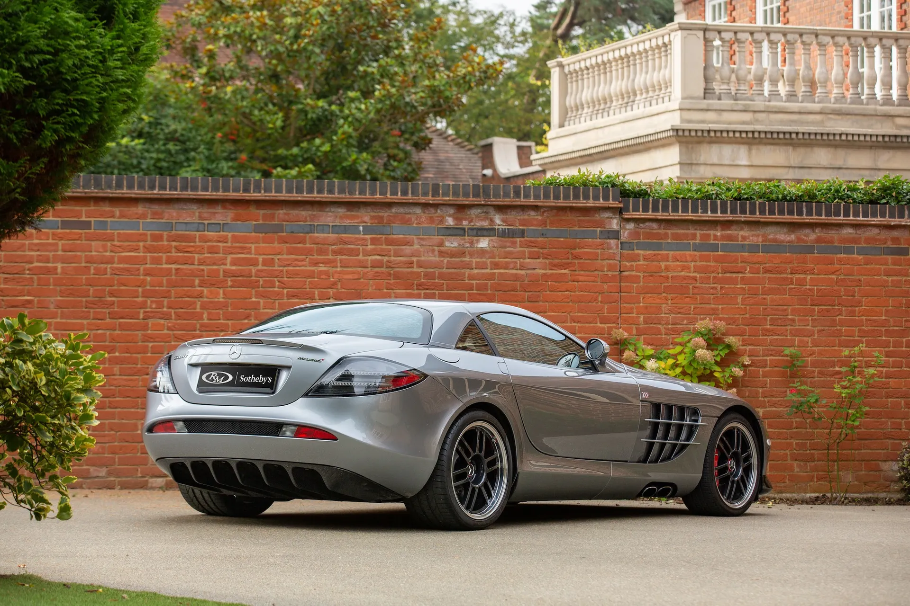
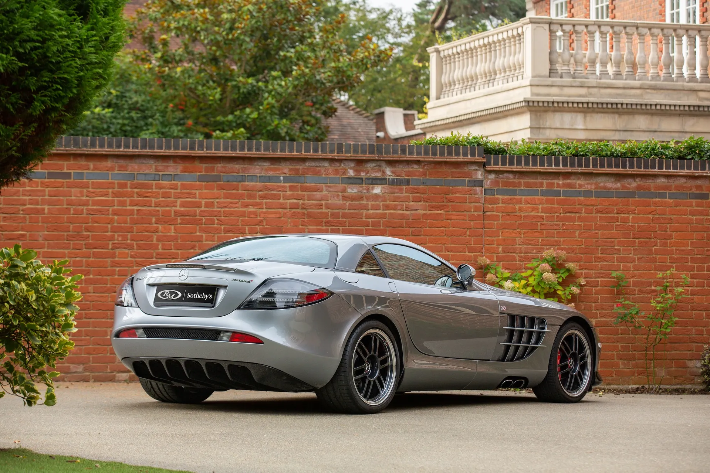
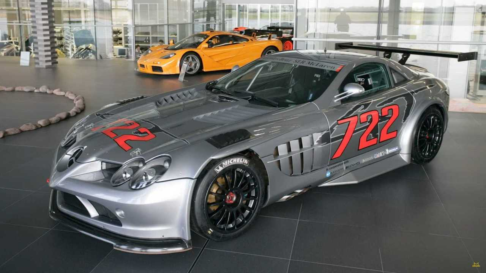

Coches exclusivos> Mercedes-Benz SLR Mclaren> Motorización
 

Entre los coches más exclusivos encontramos el Mercedes-Benz SLR Mclaren, su producción fue muy limitada, se fabricaron alrededor de 2157 unidades entre 2003 y 2010, lo que hace de este coche un vehíxulo bastante raro. Dentro de esas unidades, hay versiones especiales como el SLR 722 Edition o el SLR Stirling Moss, todavía más limitadas. Fue una colaboración única, Fue resultado de la alianza entre Mercedes-Benz y McLaren, combinando lujo alemán y experiencia en supercoches de Fórmula 1. Esto le da un valor histórico y tecnológico especial. Su carrocería, diseño y tecnología es espectacular; Carrocería de fibra de carbono, puertas tipo ala de gaviota, aerodinámica avanzada. Monta un motor V8 supercargado de alto rendimiento ( 626 CV ), acelerando de 0 a 100 km/h en ~3,8 segundos. Frenos de carbono-cerámica y suspensión avanzada derivada de la competición. Su prestigio y valor de colección es considerado un clásico moderno y muchos coleccionistas lo buscan hoy. Su valor se mantiene alto y algunas versiones limitadas se han apreciado con el tiempo.
Coches exclusivos> Mercedes-Benz SLR Mclaren> Motorización-SLR-722
Inspirado en el número de carrera 722 —referencia al histórico 300 SLR en la Mille Miglia— esta versión potencia aún más el coche